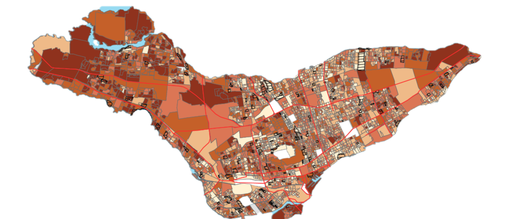

Geomarketing
Broadly speaking, geoBI helps to understand market conditions and performance
analysis for an organization, across business regions. Geography is powerful: it
talks about local potential, local markets where everyday operations are performed,
business achievements in a territory dominated by competition, purchasing potential
etc.
Analysis of Current and Potential Customers for The Société des établissements de plein air du Québec (SEPAQ)
Abstract: Geomarkeing is a discipline located between geography,
geomatics and marketing. The potential offered by the use of
GIS and geospatial data, allows us to get unique insights for strategic marketing decision
making. In this context of tourism and through an exploratory research approach, the main objective
is to analyze the spatial distribution of consumers and potential clienteles of a resort
in the census metropolitan areas (CMAs) of Quebec and Montreal. The mapping allowed us to
analyze the spatial distribution of consumers. In order to identify the territory from
which the majority of potential customers come and to define a catchment area, this
research looked at the spatial behavior of tourists and the distance effect.
Finally, market segmentation based on the socio-demographic characteristics of the
resort's consumers has made it possible to illustrate the potential for direct
marketing for prospecting new customers.

SÉPAQ Website
M.Sc. Thesis